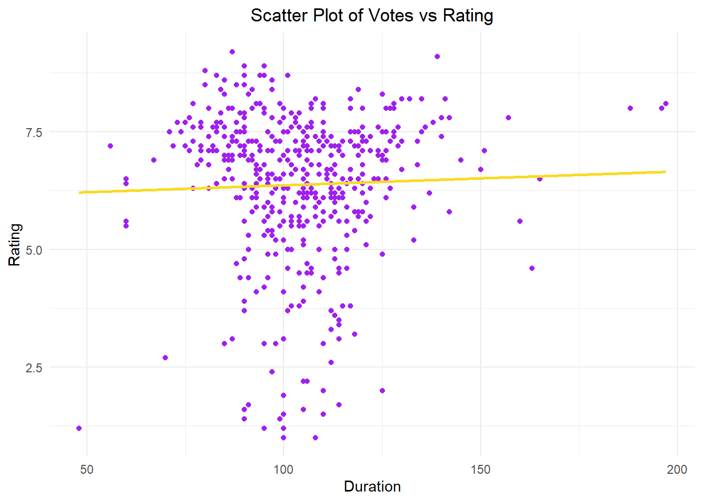

The second assignment involves the Advanced Search feature on https://m.imdb.com/search, allowing us to list available movie data on IMDb. The task is to scrape the HTML and extract the results. Assignment II consists of four parts.
Part I
Defining URLs:
Show the code
#Defining the URL for those with a Release Date between 2010 and 2023url1 <-"https://m.imdb.com/search/title/?title_type=feature&release_date=2010-01-01,2023-12-31&num_votes=2500,&country_of_origin=TR&count=250"#Defining the URL for those with a Release Date before 2010url2 <-"https://m.imdb.com/search/title/?title_type=feature&release_date=,2009-12-31&num_votes=2500,&country_of_origin=TR&count=250"
Part II
Loading necessary libraries:
Show the code
library(tidyverse) # for everything :)
── Attaching core tidyverse packages ──────────────────────── tidyverse 2.0.0 ──
✔ dplyr 1.1.4 ✔ readr 2.1.4
✔ forcats 1.0.0 ✔ stringr 1.5.1
✔ ggplot2 3.4.4 ✔ tibble 3.2.1
✔ lubridate 1.9.3 ✔ tidyr 1.3.0
✔ purrr 1.0.2
── Conflicts ────────────────────────────────────────── tidyverse_conflicts() ──
✖ dplyr::filter() masks stats::filter()
✖ dplyr::lag() masks stats::lag()
ℹ Use the conflicted package (<http://conflicted.r-lib.org/>) to force all conflicts to become errors
Show the code
library(rvest) # for HTML scraping
Attaching package: 'rvest'
The following object is masked from 'package:readr':
guess_encoding
Show the code
library(stringr) # for string processinglibrary(knitr)library(ggplot2)
I’ve watched all of them multiple times, and I believe they deserve the ratings they received.
Bottom 5 Movies by Rating
Show the code
# Arrange the data frame in descending order by Ratingbot_movies <- movies[order(movies$Rating, decreasing =TRUE),]# Top 5 and bottom 5 movies based on user ratingsbottom5 <-tail(bot_movies, 5)print(bottom5)
Title Year Duration Rating Votes
189 Cumali Ceber 2 2018 100 1.2 10230
199 Müjde 2022 48 1.2 9920
245 15/07 Safak Vakti 2021 95 1.2 20608
101 Cumali Ceber: Allah Seni Alsin 2017 100 1.0 39269
150 Reis 2017 108 1.0 73974
I haven’t watched any of them, and I don’t intend to. Just the IMDb rating can convey a lot about a movie. I am definitely biased against these films :)
B) My Top 3 Favorite Turkish Movies
Show the code
favorite_movies <-movies %>%filter(Title %in%c("Masumiyet", "Babam ve Oglum", "Yahsi Bati"))print(favorite_movies)
Title Year Duration Rating Votes
1 Babam ve Oglum 2005 108 8.2 91037
2 Masumiyet 1997 110 8.1 19295
3 Yahsi Bati 2009 112 7.4 37784
I believe they deserve the ratings they received. The rating for Yahşi Batı could have been a bit higher. In my opinion, it’s Cem Yılmaz’s funniest movie, but some people think it’s not as good as GORA and AROG.
C)Plots
Average Ratings of Turkish Movies Over the Years
Show the code
movies %>%group_by(Year) %>%summarize(ave_rating =mean(Rating)) %>%ggplot(aes(Year, ave_rating)) +geom_point() +labs(x ="Year", y ="Rating Averages") +ggtitle("Average Ratings of Turkish Movies Over the Years") +theme(plot.title =element_text(hjust =0.5))
Over the years, it is observed that the rating of Turkish movies has decreased. I wonder about the reason behind this. I believe it might be due to the lack of meaningful stories and scripts.
Number of Movies Over the Years
Show the code
ggplot(movies, aes(x =factor(Year))) +geom_bar(fill ="purple", color ="#FBDA21") +labs(x ="Year", y ="Number of Movies") +ggtitle("Number of Movies Over the Years") +theme_minimal() +theme(legend.position ="none",axis.text.x =element_text(angle =90),plot.title =element_text(hjust =0.5))
Average Ratings Over the Years
Show the code
ggplot(movies, aes(x = Year, y = Rating, fill =factor(Year))) +geom_boxplot() +labs(x ="Year", y ="Rating") +ggtitle("Average Ratings Over the Years") +theme_minimal()+theme(plot.title =element_text(hjust =0.5))
ggplot(movies, aes(x = Votes, y = Rating, color =factor(Rating))) +geom_point(color ="purple") +geom_smooth(method ="lm", se =FALSE, color ="#FBDA21", formula = y ~ x) +labs(x ="Votes", y ="Rating") +ggtitle("Scatter Plot of Votes vs Rating") +theme_minimal() +theme(plot.title =element_text(hjust =0.5))
The value of 0.130875 represents a quite low correlation. In this case, we can say that there is a weak linear relationship between Votes and Ratings.
ggplot(movies, aes(x = Duration, y = Rating, color =factor(Rating))) +geom_point(color ="purple") +geom_smooth(method ="lm", se =FALSE, color ="#FBDA21", formula = y ~ x) +labs(x ="Duration", y ="Rating") +ggtitle("Scatter Plot of Votes vs Rating") +theme_minimal() +theme(plot.title =element_text(hjust =0.5))

The value of 0.03356006 represents a quite low correlation. In this case, we can say that there is a weak linear relationship between Votes and Durations. When comparing Ratings with Votes and Rating with Durations, we can say that there is a stronger connection between Ratings and Votes.
Title Year
1 Yedinci Kogustaki Mucize 2019
2 Kis Uykusu 2014
3 Nefes: Vatan Sagolsun 2009
4 Ayla: The Daughter of War 2017
5 Babam ve Oglum 2005
6 Ahlat Agaci 2018
7 Bir Zamanlar Anadolu'da 2011
8 Eskiya 1996
9 G.O.R.A. 2004
10 Vizontele 2001
11 Her Sey Çok Güzel Olacak 1998
Combining Data Frames
Show the code
top1000$Year <-as.numeric(as.character(top1000$Year))joineddata <-left_join(top1000,movies, by =c("Title", "Year"))print(joineddata)
Title Year Duration Rating Votes
1 Yedinci Kogustaki Mucize 2019 132 8.2 54172
2 Kis Uykusu 2014 196 8.0 54647
3 Nefes: Vatan Sagolsun 2009 128 8.0 35022
4 Ayla: The Daughter of War 2017 125 8.3 42992
5 Babam ve Oglum 2005 108 8.2 91037
6 Ahlat Agaci 2018 188 8.0 27015
7 Bir Zamanlar Anadolu'da 2011 157 7.8 49365
8 Eskiya 1996 128 8.1 71704
9 G.O.R.A. 2004 127 8.0 66032
10 Vizontele 2001 110 8.0 38403
11 Her Sey Çok Güzel Olacak 1998 107 8.1 27122
The first data frame does not have a single film that matches the IMDb top 1000. I believe the differences I observed when comparing the two tables are in the film years and votes. It seems that the Top 1000 includes more recent films with significantly higher votes. (Note: I don’t know why CM101MMXI Fundamentals is in the second list 😊)